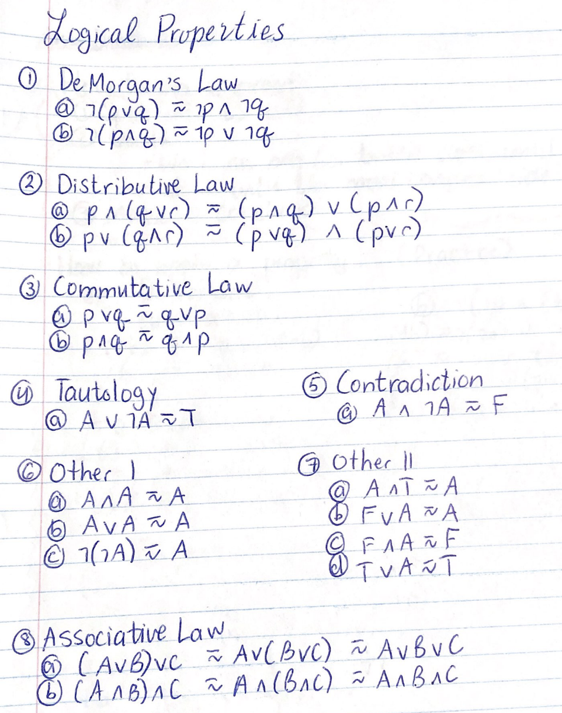

Introduction - Binary, Hexadecimal, Flow Charts, Pseudo Code, Logic
Binary
- A system of numerical notation with BASE 2, in which each place of a number is expressed as a 0 or 1 and corresponds
to a power of two.
- Computers "think" and communicate in binary
- 0 - off/false, 1 - on/true
-
| 27 |
26 |
25 |
24 |
23 |
22 |
21 |
20 |
128 |
64 |
32 |
16 |
8 |
4 |
2 |
1 |
-
| Bit: |
Byte: |
- a single binary digit (0 or 1)
|
- 8 bits
- can be used to represent a letter/symbol
- 256 diff combos
- largest possible val: 255, smallest: 0
|
Decimal
BASE 10 number system where each digit can be 0-9
Hexadecimal
Number system with BASE 16
2 digits can represent values 0-255, it is the same as one byte of binary
6 digits - often used for colors
| Hex |
0 |
1 |
2 |
3 |
4 |
5 |
6 |
7 |
8 |
9 |
A |
B |
C |
D |
E |
F |
Binary |
0 |
1 |
2 |
3 |
4 |
5 |
6 |
7 |
8 |
9 |
10 |
11 |
12 |
13 |
14 |
15 |
| 163 |
162 |
161 |
160 |
4096 |
256 |
16 |
1 |
To identify which number system, we use a subscript:
(Note: you don't need leading zeros in binary)
110 01112, 6410, A416
Converting
Binary to Decimal
Add up all the values with 1s:
1001 1011 -> 1 + 2+ 8 + 16 + 128 = 15510
Binary to ASCII
binary -> decimal -> ASCII
0010 1001 -> 1 + 8 + 32 = 41 = ')'
Decimal to Hexadecimal
binary -> decimal -> hex
0110 0110 -> 2 + 4 + 32 + 64 = 10210 = 6616
TRICK: split in half
0001 0111 -> [0001 = (1)], [0111 = (7)] -> 17
0011 1010 -> [0011 = (3)], [1010 = (10)] -> 3A
Decimal to Binary
Turn on all powers of 2 that are used
42 -> 0010 1010
Decimal to ASCII
Look in chart
Decimal to Hexadecimal
409710 -> 100116
111110 -> 45716
Hexadecimal to Decimal
AA0 -> 256(10) + 16(10) + 16(0) = 2720
If two digits - split (trick)
FF -> [F = 1111][F = 1111] = 255
Hexadecimal to Binary
hex -> decimal -> binary
or just hex -> binary (cut in half)
23 -> [2 - 0010][3 - 0011] = 0010 0011
AB -> 10101011
Adding Binary
Rules:
0 + 1 = 1
1 + 1 = 0, CARRY 1
1 + 1 + 1 = 1, CARRY 1
111 111
1011 0111
+0111 0011
-----------
1 0010 1010
Truth Tables - Logic
3 logical connectives:
AND = ∧ = &&
OR = ∨ = ||
NOT = ¬,˜ = !
# of COLS in a truth table:
- 1 for each variable
- 1 fir single not variables
- 1 for each operation working inside out
# of ROWS in a truth table:
- 2n rows
- n = number of variables
EXAMPLE:
¬((A ∨ B) ∧ ¬C)
| A |
B |
C |
¬C |
A∨B |
(A∨B)∧¬C |
¬((A∨B)∧¬C) |
| 1 | 1 | 1 | 0 | 1 | 0 | 1 |
| 1 | 1 | 0 | 1 | 1 | 1 | 0 |
| 1 | 0 | 1 | 0 | 1 | 0 | 1 |
| 1 | 0 | 0 | 1 | 1 | 1 | 0 |
| 0 | 1 | 1 | 0 | 1 | 0 | 1 |
| 0 | 1 | 0 | 1 | 1 | 1 | 0 |
| 0 | 0 | 1 | 0 | 0 | 0 | 1 |
| 0 | 0 | 0 | 1 | 0 | 0 | 1 |
Tautology - proposition that is always true so p ∨ ¬p
Contradition - proposition that is always false so p ∧ ¬p
English to Propositional Logic
English sentences can be converted to logical operators to determine truth value.
Steps
1) let statements
2) determine propositions
3) determine logical operators
Example:
The cat is not brown or the truck flies.
1) let p represent "the cat is brown"
2) let q represent "the truck flies"
¬p ∨ q
SINCE trucks can't fly, THEREFORE true when the cat is not brown
Types of Operators
Logical: and, or, not
Arithmetic: +, -, *, /, %
Assignment: =
Relational: <, >, <=, >=, !=, ==
Logical Properties
I am not typing this out

How to do a proof:
1) Split into LS and RS
2) Goals: Work on one (or both) sides until they are equal. Start with the more complex side.
3) Make a conclusion (since & therefore)
WRITTEN SUMMARY
Unit 1 - Intro to Programming
Ch 1 - Intro
Programmer -> Compiler -> Machine language
First we wrote in:
1 - Machine language - binary
2 - Then assembly and other low level
3 - Then high level langs like C, Pascal, Java, Go, ...
Steps:
1) Think
2) Organize your thoughts
3) Write them down (pseudo code)
4) Translate into C++
Ch 2 - Basics
Hello World
#include //header
int main(){
std::cout<<"Hello World\n";
return 0;
}
Logical errors - compilers can't help you, the order of commadns are incorrect or the program does not do as required
Ch 3 - Style
Comments
Single line - //
Multitline - /* */
Header comment format:
name:
date:
title:
description
Make your program as clear and as simple as possible
Escape Sequences

output - cout
input - cin
Ch 4 - Basic Expressions & Declarations & Structure & Math Functions
Basic Program Structure
Heading Comments
Data Declarations
Executable Statements
* Multiply
/ Divide
+ Add
- Subtract
% Modulus
*Note - integer division cuts off decimal places
type name;
Types of Variables
char - character
wchar_t - wide character
int - integer
float - floating point
double - double floating point
bool - boolean
void - no value
By convention, variable names are lowercase.
BAD:
3rd_entry - Begins with a number
all$done - Contains a "$"
the end - Contains a space
intt - Reserved word
Constants
Declared with const C++ keyword and usually named in caps:
const double PI = 3.14;
Declare first:
int answer;
Assign:
answer = (1+2)*4;
DECLARE VARIABLES AT THE TOP OF PROGRAM
General Structure
1) Declare variables
2) Initialize variables
3) Do calculations
4) Output answers
Math Functions
#include OR #include

Unit 2 - Input, Decisions and Loops
Ch 5 - Reading Data
std::cout (<<), reading data - std::cin (>>)
- Cin skips whitespaces
int alpha = 10.5 will actually store 10
Ch 6 - Decision Statements
Decision and control statements allow us to change the flow of a program.
Relational Operators
<= - Less than or equal to
< - Less than
> - Greater than
>= - Greater than or equal to
== - Equal
!= - Not equal
Increment & Decrement Shortcut
++a or a++, --a or a--
Compound Operators
Combines the = operator with another arithmetic operator
a += 5.67 is equivalemnt to a = a + 5.67
-=, *=, /=, %=
Logical Operators
Logical or - || - (expr1) || (expr2)
Logical and - && - (expr1) && (expr2)
Logical not - ! - !(expr)
If statement
if(condition){
statement;
}else if (another condition){
statement;
}else{
statement;
}
Nested if statements are if statements inside of if statements
Control Statements
While Statement
General format:
while(condition){
statement;
}
While loops as error checks - continue to loop while they enter a wrong value
Break statement
- Will cause the program to exit the intermost loop
if(item == 0){
break;
}
Do - While
- The loop is always executed at least once
do{
statements(s); //body of loop
}while(condititon); //test
- The condition is tested after the loop is executed once
Example:
counter = 0;
do{
total += counter;
counter++;
}while (counter < 5);
Do - While VS While
Good: Using do while you do not tneed tot ask before entering tthe loop since it will always enter once.
Bad: The condittiton is checked at the end which can be bad if you do not want it to enter once.